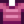

Bug Meat
| Bug Meat | |
| It's a juicy wad of bug flesh. | |
| Information | |
| Source | |
| Sell Price | |
Bug Meat is a Monster Loot item which is dropped from any type of insect, including Armored Bugs and Dangerous Armored Bugs if the player has forged their weapon with a Bug Killer enchantment.
Dorado, Lingcod, or Pike Fish Ponds may produce 20 Bug Meat when the population of the pond reaches 9.
Vincent sells Bug Meat in his shop at the Desert Festival for  1 Calico Egg.
1 Calico Egg.
Gifting
| Villager Reactions
| |
|---|---|
| Hate | |
Crafting
Note that the Training Rod and Bamboo Pole cannot use any type of bait. A Fiberglass Rod, Iridium Rod or Advanced Iridium Rod is required.
| Image | Name | Description | Ingredients | Recipe Source |
|---|---|---|---|---|
| Bait (5) | Causes fish to bite faster. Must first be attached to a fishing rod. | |||
| Wild Bait (5) | A unique recipe from Linus that gives you a chance to catch two fish at once. | |||
| Sturdy Ring | Cuts the duration of negative status effects in half. | |||
| Bug Steak | The last resort of the hungry cave diver. | |||
| Magic Bait (5) | Allows you to catch fish from any season, time, or weather, from whichever type of water you cast into. |
Bundles
Bug Meat is not used in any bundles.
Tailoring
Bug Meat is used in the spool of the Sewing Machine with Cloth in the feed to create a 
Quests
- Ten Bug Meat may be requested by several fish in Fish Pond quests.
- Willy requests 100 Bug Meat in the "Juicy Bugs Wanted!" Special Order. The rewards are
 3,000g and the Quality Bobber recipe.
3,000g and the Quality Bobber recipe. - Twenty Bug Meat may be requested by the Raccoon at the Giant Stump as part of his fifth request, or as part of any request starting with the sixth.
History
- 1.0: Introduced.
- 1.4: Used as an ingredient to the Sturdy Ring recipe. Can now be used in Tailoring. Can be requested in Fish Pond quests. Can be produced by Fish Ponds.
- 1.5: Needed in the "Juicy Bugs Wanted!" Special Order. Used as an ingredient to the Bug Steak and Magic Bait recipes.
- 1.6: Can now be purchased at Desert Festival. May now be requested by the Raccoon.